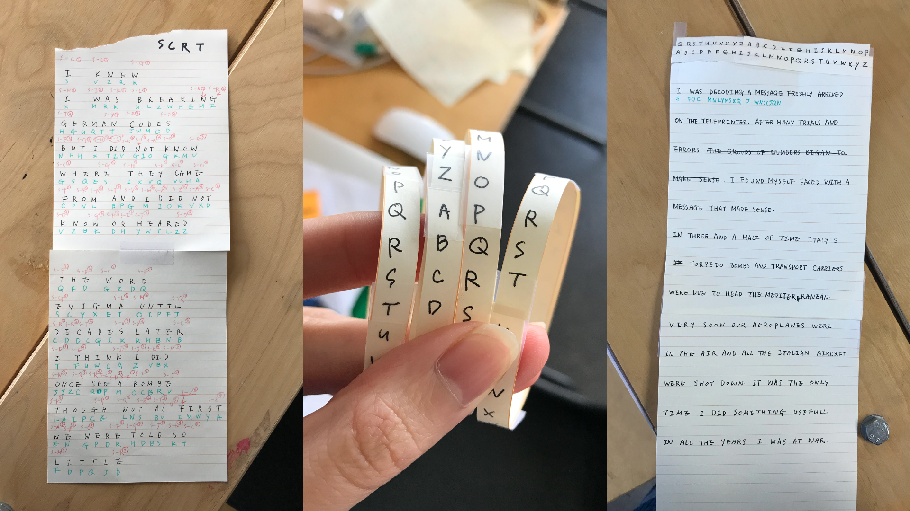
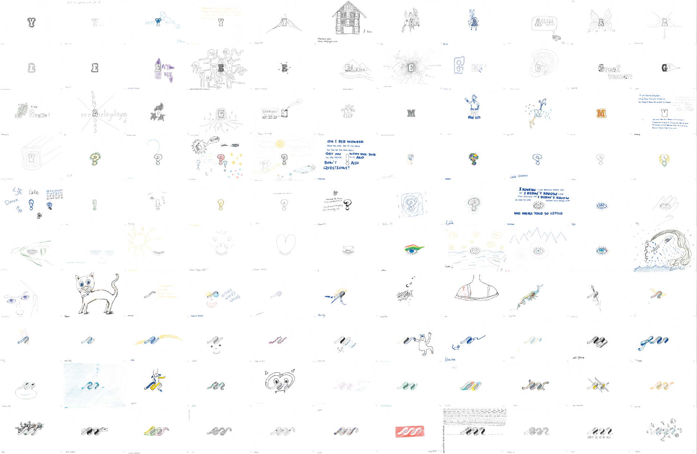

MINKY LEE
Things we
Don't need to know
2019 / MA project
This brief asks you to engage with the potential value of not knowing things. You will explore the ways in which secrets might form the basis of positive, useful or creative design strategies. You are asked to make things with, around or for hidden elements within society and culture, without exposing the secrets themselves. The aim is not to deny the negative or harmful effects of secrecy, but to look for areas where secret or hidden knowledge can generate positive or playful engagements.

I was talking about the brief during the end of term tutorial. My first term project was about the ways to make our everyday scenery into codes, so at first, I wanted to expand that topic and research secret code languages. My tutor Tobie suggested me to look into Bletchley park, and I remembered I love the ITV drama The Bletchley Circle. A top secret code breaking institution with female dominated population? Yes please. This project must be fun.
I started my research with reading papers and books, and actually visiting the place. From the books I was reading, I collected interviews from the veterans on post-it notes. Here are the lists of books and papers and online materials I looked into:
They were highly segmented organisation. Most of the people who worked there didn’t know about where their work came from or where it went. It was forbidden to talk about their work to anyone, including their family or co-workers who worked in different hut. Many of them were hesitant to talk about it even after the war was over. And even though the high-profile positions were filled with men, about 70 per cent of the workforce who worked there were women. Some women WERE involved with the jobs that considered ‘more important’.
When they found a possible candidate to recruit, they ran a background check and without explaining anything, the women had to report to Bletchley park (also known as station X) and sign the Official Secerets Act. Many of them describe the atmosphere very sombre and serious, giving them an impression that if they say anything about this place, they could go to jail or be executed.
Although the idea of secret codebreaking job sounds very exciting, it seemes most part of the job were repetitive and boring, especially when you don’t know what these jobs are for. There were several different postitons, such as Y station listeners who tapped into the enemy morse code traffic all over UK and abroad, and dispatch riders who delivered them to the park, and registrators and decoders and translators. Quite a lot of the interviews were saying the work itself was dull and tiring and the environment they were working and living in was not good. Many of the workforce suffered from exhaustion, but there also were clubs and societys and lectures apart from work for the people to enjoy.

Reading through the stories of these women's experience and lives were fascinating.
Lady Jean found out one morning that the Italians were going to attack.
She informed her superior and could mitigate the attack,
but later, she learns that most of the casualties from this operation were
women and children. Mavis Batey was going to apply for the nurse training program,
but her professor suggested her to go to Bletchley park,
and she played a major role there. Pamela left her career as a
promising actress and joined BP as a registrator but was not very happy with it.
I put these stories together and wrote
six piece short stories of six women
in different position who worked in Bletchley park.
I thought I could say this was a chain of women doing their own works, not aware of the process, or each others existence, but still part of a bigger process of doing something. Like a small part of a machine.
I was a bit lost at this point. I knew I wanted to find a way of re-enacting this chain, but couldn’t find the way I felt right. At first, I tried to do that literally by coding one of the interview texts I've collected from books with simplified way of enigma - by using three rotors and setting a key for the initial setting - and give it to different women and decode it. My tutors advised me not to take is literally, and concentrate more on the experiences of the women.
About a week later, I came up with the idea of using the process of animation production. I drew four sets of small animations that has some relationship with the interview texts, printed it out and gave it to different women to trace it and draw something on top of it and sign it. I didn't explain what this is. By doing this, I was trying to re-enect the experience of taking part in a process but without knowing what it is for.
So I was able to collect 110 drawings that's also a part of an animation. Some people wanted to know what this is, so I sometimes explained it after they did the drawing. When I start explaining what Bletchley park was, people who knew what that was shout the name Allan Turing right away. Of course he was a brilliant scientist. But when I said there also were many brillient women who worked there, they instantly seemed very interested.
Finally, I put all four animation together and added my voice reading out the interview texts. For the end of term open studo, the animation was being played on the big screen on the studio wall and my writing and the drawings I collected were displayed on a table.

Overall, I really enjoyed this project. Exploring the stories of the women who were in the background of the history was truly exilerating, and even more so to talk about it with the women who are living in present day and design something out of it. I want to say sorry for the women whom I refered to as 'girls' instead of 'women' while I was asking their favour to do the drawings, and thank everyone for supporting me with this project.
These are the feedbacks I got from my tutors:
Practice Submission:
A beautifully conceived and executed project. We would love to see a longer version (2-
3 mins) and would strongly recommend that you see this as an ongoing work: it could grow and be added to
over time. You identified your secret quickly, and found very specific points of interest: it was a large topic,
and you could easily have become lost!
You also used a range of creative methods to explore possible directions, and listened to feedback around
the direction of the work at an early stage. We feel this was key to the success of your final outcome: you
critically evaluated your own process, and made mature decisions about where to focus the practical
direction. Both the outcome and project management were exemplary.
Our advice moving forward, would be to start your practical experimentation sooner (methods/processes).
Try to start making things during your initial research-stage, while you are still reading and gathering
secondary source material. You are extremely dedicated and hard-working, and you make confident choices
about where to dedicate your time/efforts. We sense that if you get your practical processes up and running
sooner (even before you have any idea what you are doing!), you could really begin to surprise yourself with
objects/outcomes that move beyond comfortable parameters.
Written Submission:
This piece of writing was a highly engaging and engaged piece of work, which
demonstrates a high level of ambition and is executed with exceptional skill. There is clear evidence of a
very high level of research, which is softly and gently referenced throughout the work. It is a highly effective
piece of writing, that works incredibly well in conjuring another world, another person, another time.
Particularly strong is that we, as readers, never learn the woman’s name. Well done Minky; this was an
absolute pleasure.